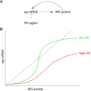

News Archives : 2004 : Mathematical Models of Robustness in Development
by Nicholas Ingolia
August 12, 2004
Biological systems are robust; they function reliably despite disruptions. Internal fluctuations occurring on a microscopic scale or changes in external conditions, such as temperature, pose challenges to system maintenance that must be met. Robustness, or the systemic readiness to handle such diverse challenges and protect the system, may be the result of some general features of biological systems. Alternatively, each individual system might have unique, stabilizing mechanisms that have emerged over the course of evolution.
Simulations of biological systems have often been used to study robustness. One advantage of these simulations is that they can subject the systems to a large number of perturbations. They can even test robustness in situations that, for technical reasons, would be impossible in experimental systems.
|
 Positive Feedback Loops Yield Bistability [more] |
|
A paper by Ingolia in the June 15, 2004, issue of PLoS Biology (Ingolia NT (2004) Topology and Robustness in the Drosophila Segment Polarity Network. PLoS Biol 2(6): e123 DOI:10.1371/journal.pbio.0020123) demonstrates that this robustness arises from a specific kind of on/off mechanism. Analyzing the structure of the genetic network revealed feedback loops that are crucial to its robust functioning. Moreover, these loops have switchlike behavior, meaning that they are either entirely on or entirely off and will not remain in an intermediate state. Information fed back into the loop from its output is in the form of a clear yes or no alternative.
The importance of positive feedback loops was hypothesized in earlier experimental studies of segment polarity; now Ingolia has added strong evidence for this possibility and clarified aspects of the mechanisms. Ingolia’s mathematical analysis of switchlike behavior successfully predicted which manipulations of random parameters would be safe and which would disrupt segment polarity in the model. Furthermore, the model was improved by combining recent experimental discoveries with the analysis of feedback loops. The modified model correctly dealt with the cell division that occurs during segment polarity patterning. This not only gives strong confirmation of the switch-based loop model but points to a crucial source of robustness: by suppressing small differences between intermediate states, switchlike behavior is known to provide robustness in other contexts.
Switchlike behavior may play a role in the robustness of many biological systems, in development and in other contexts. Other mechanisms also provide for robustness in biological systems, though, and simulation and mathematical analysis can play an important role in understanding them.